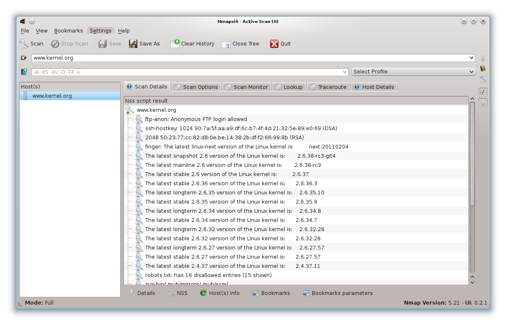
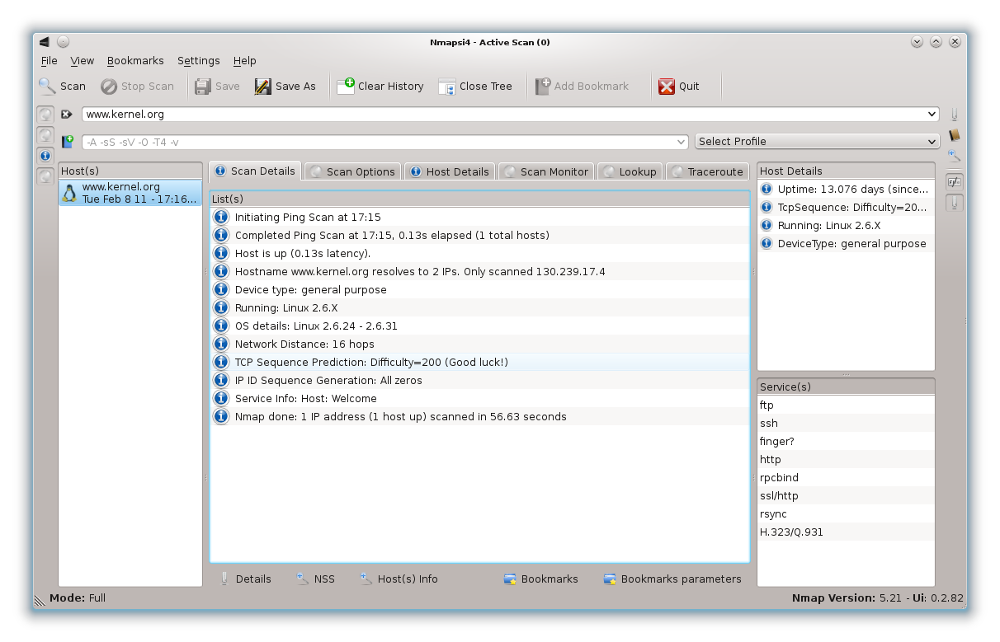
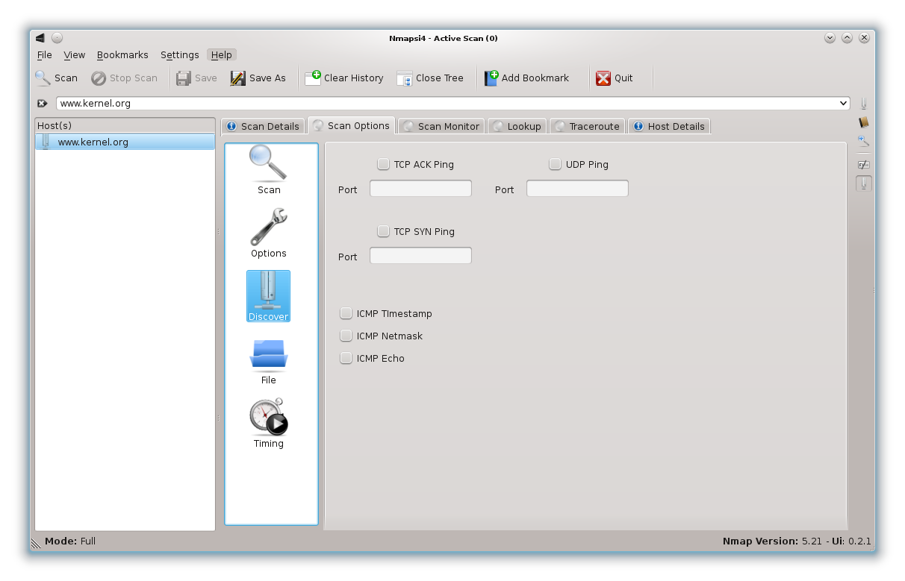
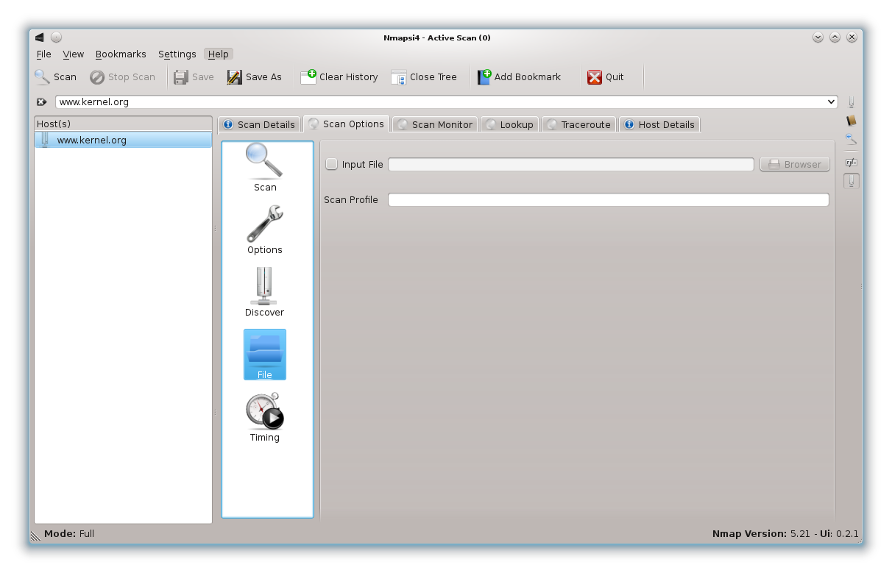
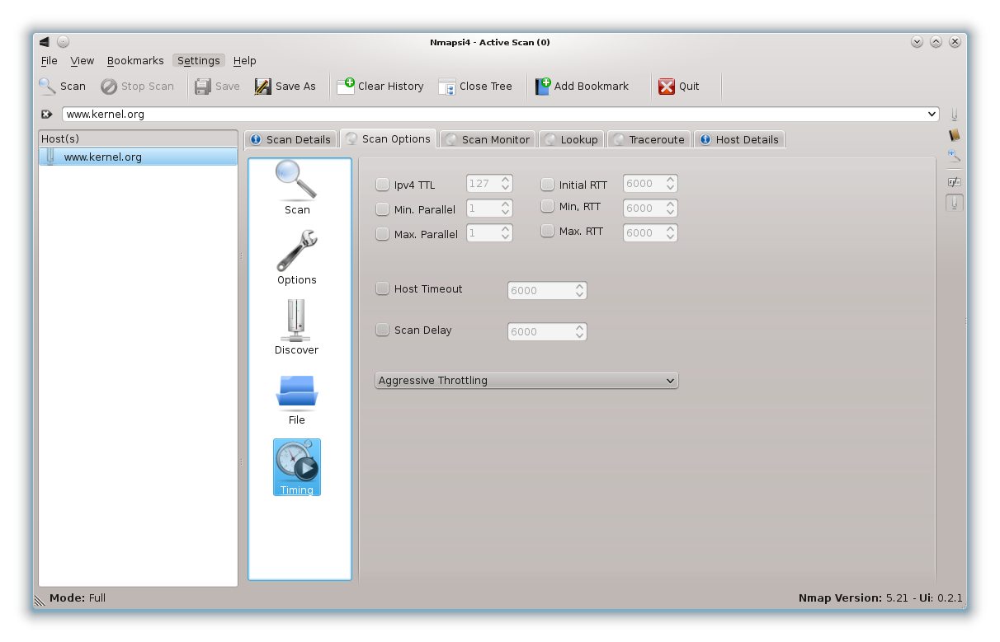
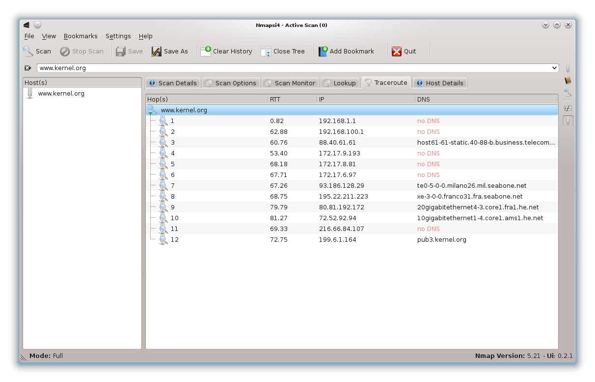
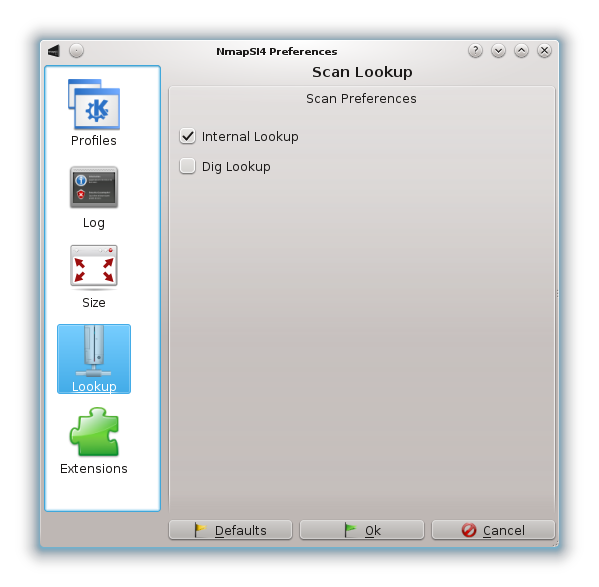

NmapSI4: manuale d'uso
Indice dei contenuti
Preferenze
Motore di ricerca vulnerabilità
Log reader
Qualche esempio...
Link utili
NmapSI4
Introduzione
NmapSI4 è una GUI completa, realizzata in Qt, per Nmap, con l'obiettivo di dare maggiore padronanza agli utenti di questo potente strumento di analisi.
Schermata principale

Questa è la schermata principale di NmapSI4, possiamo notare alcuni elementi:
- Barra dei menu
- Barra di strumenti
- Form di inserimento host, ip o dns per la scansione
- Form di inserimento per i parametri di scansione
- Schermata dei risultati
- Barra di stato
Per iniziare una scansione inserire un host, ip o dns e cliccare sul pulsante "Scan".
Al termine della scansione, vengono visualizzati i risultati nella schermata dei risultati.
Sulla barra di stato è possibile vedere con quali diritti è in esecuzione NmapSI4 insieme alla sua versione software ed insieme alla versione software per Nmap.
Scansione
Questa sezione riguarda i pulsanti presenti sotto la schermata dei risultati.
Dettagli di scansione

Qui vengono elencati i risultati della scansione, e nello specifico: la porta del servizio, lo stato della porta, il tipo di servizio ed una breve descrizione.
Nmap script

Qui vengono mostrati dei risultati in base a degli script presenti nella suite Nmap.
Per ulteriori informazioni rimandiamo al capitolo specifico della guida Nmap.
Host info

Qui sono presenti dettagli relativi alla scansione, come l'ora di inizio, la durata della scansione ed altre informazioni utili.
Preferiti

Qui possiamo mantenere i nostri bersagli preferiti. La schermata ci mostra l'ip o il nome host e la data di memorizzazione.
Parametri dei preferiti

Qui possiamo visualizzare i parametri di scansione dei preferiti memorizzati.
Opzioni di scansione
In questa sezione è possibile cambiare i parametri di scansione. Per applicare i cambiamenti è necessario usare il pulsante in basso "Applica".
(*)Scan

In questa sezione è relativa ai parametri strettamente della scansione, ad esempio profili di scansione, tipologia e numero di porte.
(*)Options

In questa sezione è possibile cambiare il livello di dettaglio, ed utilizzare parametri specifici come Ipv6 e frammentazione.
(*)Discover

In questa sezione è possibile cambiare i parametri relativi alle tipologie di pacchetti da usare nella scansione.
File

In questa sezione è possibile specificare un file di input ed un profilo di scansione specifico.
(*)Timing

In questa sezione è possibile cambiare i parametri riguardo al tempo di scansione ed al TTL dei pacchetti inviati.
Monitor della scansione

Questa sezione elenca i vari bersagli delle scansioni attive, non ancora completate.
(*)Lookup

Questa sezione mostra le corrispondenze tra bersagli, ip e servizi connessi.
(*)Traceroute

Questa sezione mostra la "strada" percorsa dai pacchetti della scansione.
Preferenze
Profili

In questa sezione è possibile cambiare il profilo di scansione predefinito.
Log

In questa sezione è possibile cambiare le impostazioni riguardanti il log delle scansioni.
Dimensioni

In questa sezione è possibile cambiare le impostazioni della finestra principale di NmapSI4.
(*)Lookup

In questa sezione è possibile cambiare le impostazioni per il lookup.
Estensioni

In questa sezione è possibile attivare o disattivare le estensioni di NmapSI4.
Motore di ricerca vulnerabilità
Schermata principale

Questa sezione mette a disposizione un motore di ricerca per cercare eventuali vulnerabilità dei servizi tracciati nella scansione all'interno dei maggiori siti di riferimento per le vulnerabilità.
È possibile cercare in base al servizio specifico riconosciuto tramite la scansione, oppure indicando un altro termine di ricerca.
Preferiti

Qui possiamo memorizzare i nostri risultati preferiti.
Log reader
Schermata principale

Questa sezione permette di leggere l'output completo della scansione effettuata da Nmap.
Qualche esempio
Scansioni multiple
È possibile usare le scansioni in diversi modi:
- scansione singola: ip (es. 192.168.1.1) o dns (es. www.kernel.org)
- scansione multipla: range di ip (es. 192.168.1.10/20) per scansionare da 192.168.1.10 a 192.168.1.20
- scansione mista di ip e dns: es. 192.168.1.1 www.kernel.org
- scansione su una lista di ip o di dns: es 192.168.1.10 192.168.1.15, oppure www.kernel.org www.google.com
È consigliabile non inserire un numero elevato di host da scansionare
Usare i preferiti
Per usare i preferiti basta sfruttare il pulsante in alto per aggiungerlo in lista.
Allo stesso modo per salvare il profilo di scansione c'è il pulsante posto vicino al form per l'inserimento dei parametri.
Per riusare in seguito un host o un profilo salvato, basta selezionarlo nella relativa schermata e selezionare "Scansione" per gli host o "Usa parametri" per i profili.
Per eliminare una voce dalla lista ripetere la procedura di riuso, scegliendo la voce di rimozione.